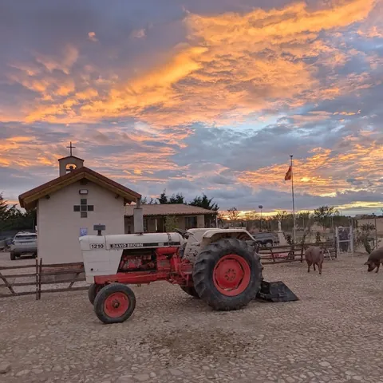

ReasentamientoVolver al campo
El movimiento acompaña a las familias que quieren vivir en el campo, en tierra propia. Nosotros ya dimos ese paso: la granja nació de la búsqueda de una vida más pegada a la realidad, al ritmo del sol, de las estaciones y de lo que pide la tierra.
En la granja · Terra y Creatio: cultivamos en ecológico y cuidamos de nuestros animales, porque la tierra es obra de Dios y nosotros solo sus administradores.